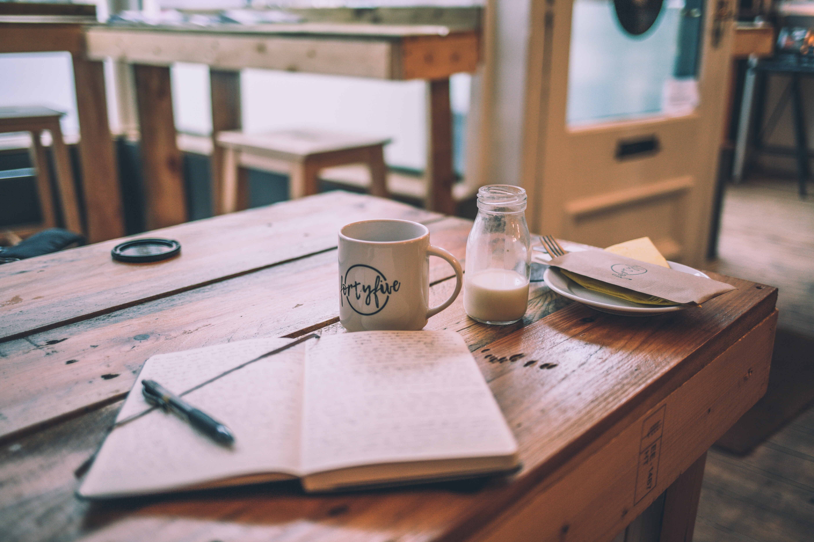

- 수댕 오전 일과
- 수댕 오후 일과
- 수댕 저녁 일과
저녁을 먹습니다 (식사전 물한잔!! 단백질위주의 두주먹 식사
이상: 운동후 단백질 가득 꿀맛
현실: 7시가되면 모든것을 중단하고 저녁을 먹습니다
두번째 업무마무리 ( 그릭요거트와 야채 )
이상: 이미 저녁전에 마무리가 되었다
현실: 업무를 마무리한다 중간에 집중이안되면 운동을 30분한다
🐬일2후 꿀맛 같은 자유시간:) (따끈한 티 그리고
이상: 어떤것에 푹빠지고 꽃혀서 나만의 것에 푹빠지면 좋겠다 주희처럼 이자유시간이 기다려지도록
- 드리밍, 정리정립, 장보기, 정리정돈,여행계획, 펍에서약속
- 계발과 흥미: 프로그래밍공부,영어공부, 창작,취업준비, 책보기, 여가문화
현실: 자유시간을 가지기라도 한다면 얼마나 좋을까요오오오
잘준비에 들어가는시간 휴대폰을 충전하고 격리! ( 티타임)
이상: 11시가되면 먼저 모든 잘준비를 끝냅니다 세수 양치 등등 !!! 그리고 라디오또는 좋은 음악을 틉니다. 그리고는 다이어리를 씁니다. 그리고 책이나 성경을 읽다가 잠이듭니다
현실: 최대한 1시전까지 씻고 해야할일을 끝내고 잠에 듭니다 😃 굿나잇 수고했어요~